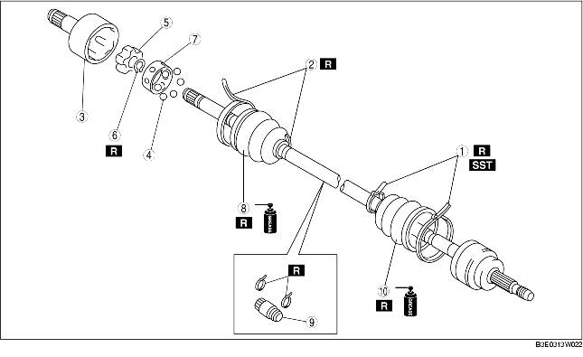

1. Disassemble in the order indicated in the table.
2. Assemble in the reverse order of disassembly.

.
|
1
|
Boot band (wheel side, transaxle side: smaller diameter)
|
|
2
|
Boot band (transaxle side larger diameter)
|
|
3
|
Outer ring
|
|
4
|
Balls
|
|
5
|
Inner Ring
(See Inner Ring Disassembly Note.)
|
|
6
|
Snap ring
|
|
7
|
Cage
|
|
8
|
Boot
(See Boot Assembly Note.)
|
|
9
|
Dynamic damper
(See Dynamic Damper Assembly Note.)
|
|
10
|
Shaft and ball joint component
|
1. Move the dynamic damper to the wheel side of the drive shaft.
2. Move the boot and cage to the wheel side of the drive shaft.
3. Tap the inner ring using a plastic hammer while spreading the snap ring, and disassemble the inner ring from the drive shaft.
1. Install the dynamic damper as shown in the figure.
2. Install a new boot band onto the dynamic damper.
1. Fill the boot (wheel side) with the specified grease.
2. Install the boot with the splines of the shaft still wrapped in tape from disassembly.
3. Remove the tape.
1. Tap the inner ring using a plastic hammer while spreading the snap ring, and assemble the inner ring to the drive shaft.
2. Align the marks and install the balls and cage to the inner ring as shown in the figure.
1. Fill the outer ring and boot (transaxle side) with the specified grease.
2. Install the outer ring on to the shaft.
3. Install the boot.
4. Set the drive shaft to the standard length.
5. Release any trapped air from the boots by carefully lifting up the small end of each boot with a cloth wrapped screwdriver.
6. Verify that the drive shaft length is within the specification.